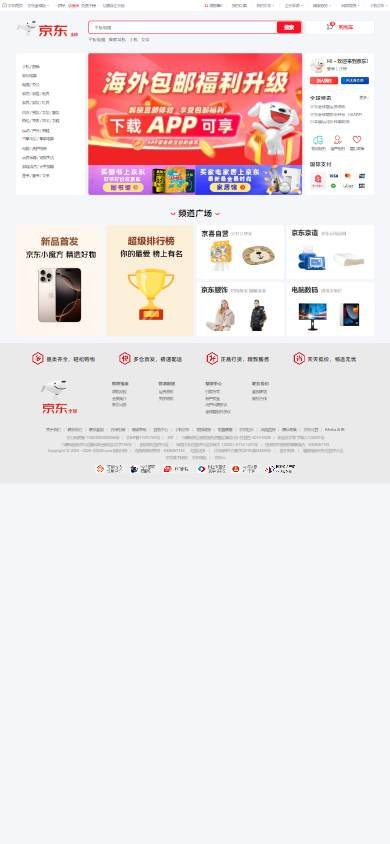
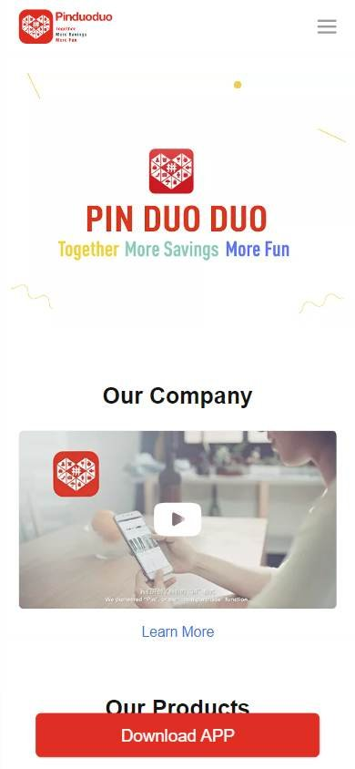

Tienda online que compite por buen precio
Los seleccionados
Los tres sitios más visitados de China, según estadísticas de tráfico.
En resumen: lo que hacen los líderes
La pantalla de inicio de cada uno


Estilo visual
Colores, imágenes, tipografía y cuánta información muestran.
Tu estilo visual debería…
- Si tu público es chino, el rojo y el dorado transmiten fiesta y oferta; la densidad alta es esperable.
Lo que tienen en común: Muchísima información y colores intensos de promoción, con el rojo como color dominante.
La paleta de cada uno
Medida sobre la primera pantalla. Los colores de marca salen del header; el resto muestra cuánto espacio ocupa cada color.
Así lo resuelve cada uno
Ficha comparativa
| Aspecto | JD.com | Pinduoduo | Suning |
|---|---|---|---|
| Paleta | Variada: rojo, violeta, rosa | Acotada: rojo + blanco | Variada: rojo, dorado, naranja |
| Imágenes | Fotos de producto chicas y banners ilustrados | Foto de persona con el celular | Fotos de producto chicas y banners |
| Densidad | Muy alta | Baja | Muy alta |
| Tipografía | Caracteres grandes en rojo para promos | — | Caracteres grandes en blanco sobre rojo |
Header
La franja de arriba con el logo y los accesos.
Tu header debería…
- Franja superior gris con enlaces chicos: cuenta, pedidos, descargar la app.
- Logo con la mascota o ícono de la marca a la izquierda.
- Carrito junto al buscador, no en la esquina.
Lo que tienen en común: Las tiendas chinas en computadora usan una franja gris superior llena de enlaces (cuenta, pedidos, app) y un header blanco con el logo y la mascota de la marca. Pinduoduo vende solo por la app y su web solo invita a descargarla.
Así lo resuelve cada uno

Ficha comparativa
| Aspecto | JD.com | Pinduoduo | Suning |
|---|---|---|---|
| Fondo | Blanco | Blanco (página institucional: la tienda funciona en la app) | Blanco, con franja promocional roja arriba |
| Logo | Animal mascota + nombre, a la izquierda | A la izquierda | Animal mascota + nombre, a la izquierda |
| Barra superior | Fila gris de enlaces: cuenta, pedidos, app | Pestañas institucionales | Fila gris de enlaces + banner rojo de promo |
| Carrito | Botón «carrito» junto al buscador | — | Junto al buscador |
Buscador
La barra para buscar.
Tu buscador debería…
- Buscador ancho con borde grueso del color de tu marca y botón «Buscar» relleno.
- Debajo, 4 o 5 búsquedas populares en texto chico.
Lo que tienen en común: Buscador grande con un borde grueso en el color de la marca y un botón relleno del mismo color, con búsquedas populares sugeridas debajo.
Así lo resuelve cada uno


Ficha comparativa
| Aspecto | JD.com | Pinduoduo | Suning |
|---|---|---|---|
| Tamaño | Protagonista, centrado | — | Protagonista, centrado |
| Estilo | Borde rojo y botón rojo «buscar» | — | Borde naranja y botón naranja «buscar» |
| Debajo | Búsquedas sugeridas en texto chico | — | Búsquedas sugeridas en texto chico |
Menú y categorías
Cómo se organizan las secciones.
Tu menú y categorías debería…
- Columna de categorías a la izquierda del banner, siempre visible.
- Mucha información a la vista: es la costumbre local.
Lo que tienen en común: Las categorías se listan en una columna fija a la izquierda del banner, con muchas opciones a la vista. La pantalla se ve densa a propósito.
Así lo resuelve cada uno


Ficha comparativa
| Aspecto | JD.com | Pinduoduo | Suning |
|---|---|---|---|
| Formato | Columna de categorías a la izquierda del banner | — | Columna de categorías con íconos a la izquierda del banner |
| Densidad | Muy alta | — | Muy alta |
Primera pantalla
Lo primero que se ve debajo del header.
Tu primera pantalla debería…
- Estructura en tres columnas: categorías, banner promocional y panel de cuenta.
- Colores intensos de promoción, con el rojo como protagonista.
Lo que tienen en común: El banner va en el centro, entre la columna de categorías y un panel de cuenta con saludo y accesos rápidos. Colores muy intensos, sobre todo rojo.
Así lo resuelve cada uno
Ficha comparativa
| Aspecto | JD.com | Pinduoduo | Suning |
|---|---|---|---|
| Formato | Banner central con producto + panel de cuenta a la derecha | Foto de persona con el celular | Banner central rojo + panel de cuenta a la derecha |
| Colores | Violeta y rosa intensos | Rojo | Rojo y dorado |
| Al costado | Panel con saludo, accesos y servicios | — | Panel con saludo y accesos |